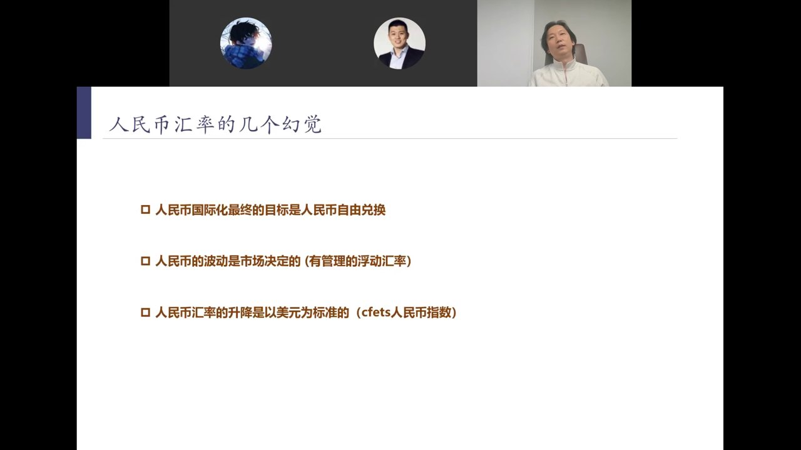
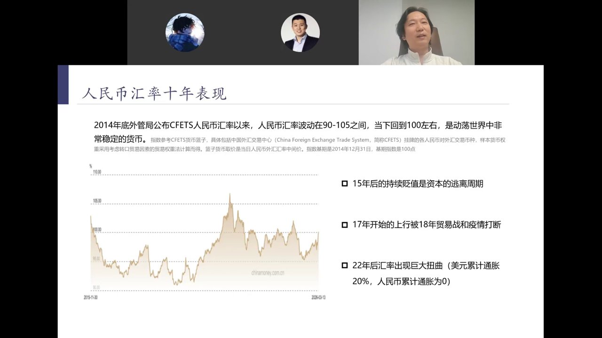
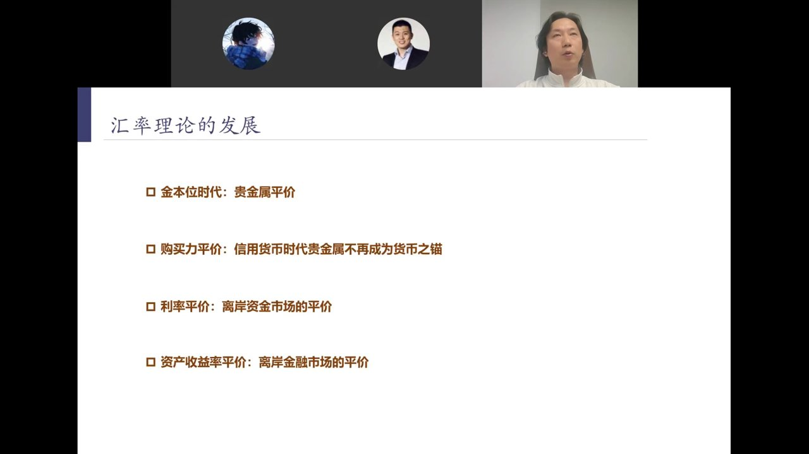
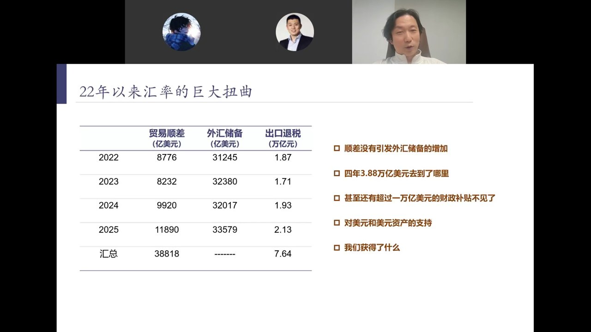
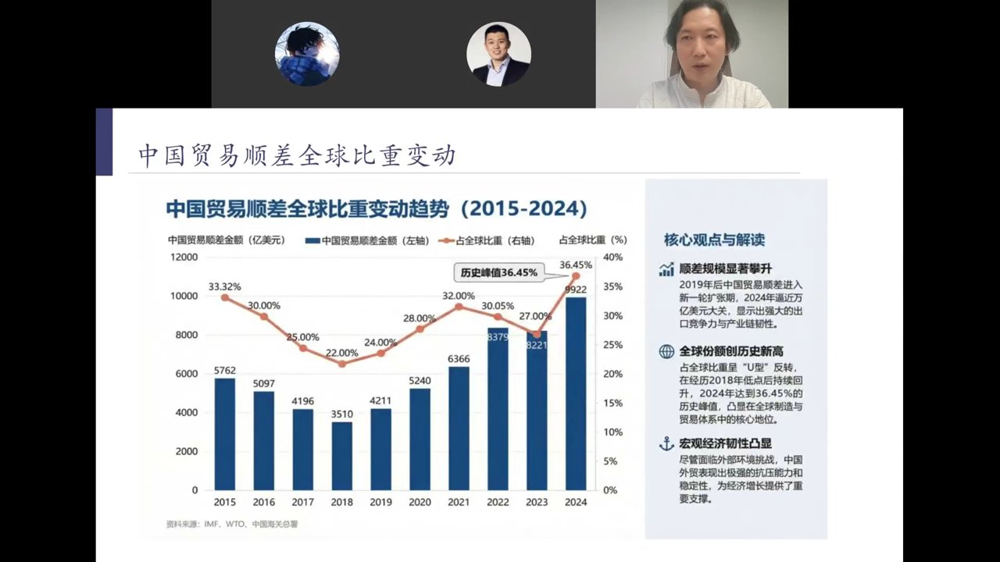
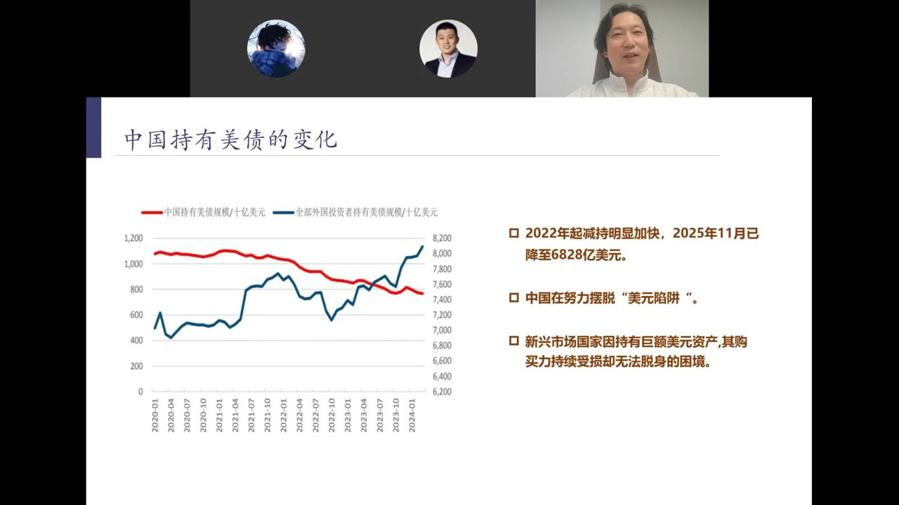
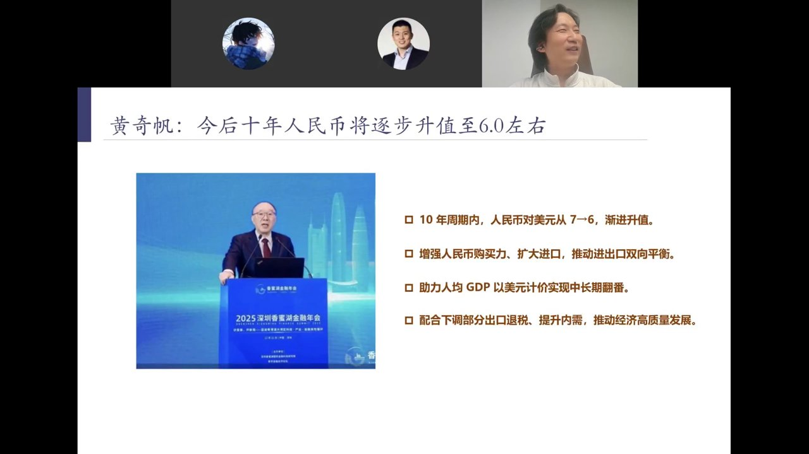
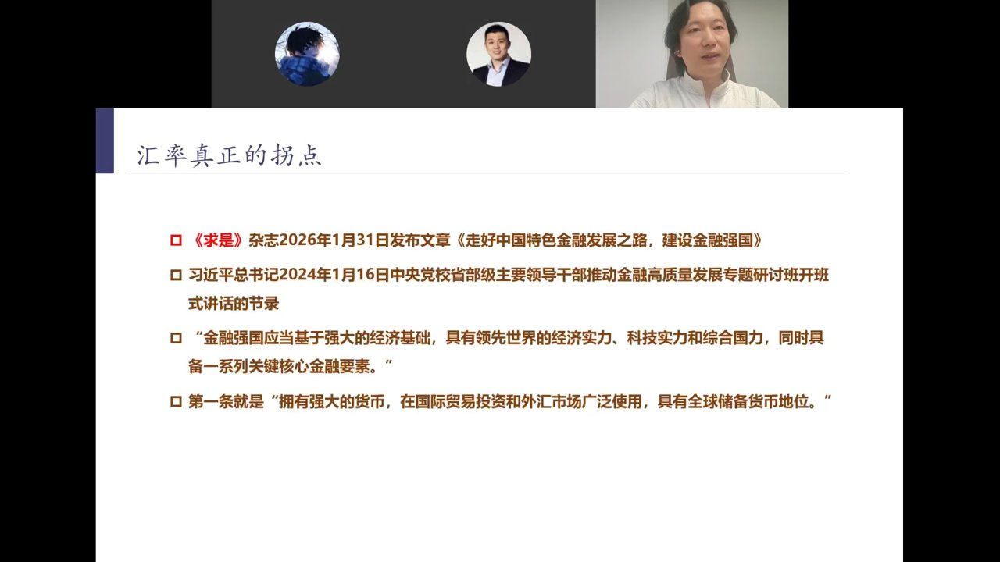
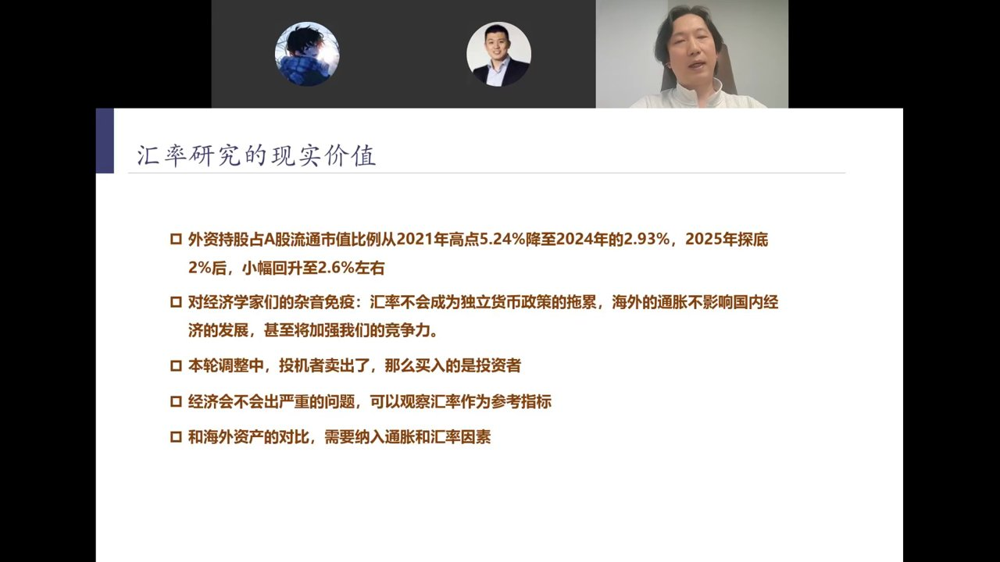
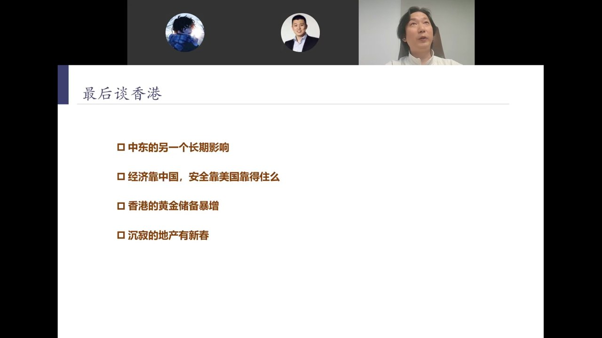

在人民币弱势周期里，部分经济学家用西方教科书框架套人民币汇率，暴露了三个根本性误读：
所谓"自由兑换"实为资本项目自由兑换——背后是想把钱搬出去的诉求。真正国际化的人民币是以国家为主体的兑换机制，而非以个人为主体的资本项目自由兑换。
自1994年起，中国实行"以市场供求为基础的单一的有管理的浮动汇率机制"。"管理"二字意味着中间价由人民银行设定，波动区间被严格控制，情绪性因素被过滤。
对美元升贬只是双边波动。CFETS人民币汇率指数（一篮子货币）十一年间从100到100.058，几乎纹丝不动——这才是"有管理"的真实含义。

2014年底外管局公布CFETS人民币汇率指数以来，人民币波动在90-105之间，当下回到100左右——在动荡世界中是非常稳定的货币。
美元变毛了26%，人民币购买力没动，人民币居然还贬值——这不是市场行为，是主动压制汇率以巩固出口竞争力的战略选择。

津巴布韦、委内瑞拉股市涨得比美国还多——因为政府放任通胀不管。靠通胀剥削老百姓换来的股市上涨没有价值，发展中国家不掌握供给端时放任通胀=放任发达国家收割。

2022-2025年四年间，中国累计贸易顺差3.88万亿美元，但外汇储备几乎没有增加（仅增约2000亿）。更惊人的是，出口退税累计7.64万亿元人民币——财政收入也在补贴美元资产。
这笔账算下来：中国用7万多亿人民币财政补贴+3.88万亿顺差的"机会成本"，买到了全球唯一完整工业体系、占全球36.45%的贸易顺差份额、占全球55-60%的工业产能。谁制裁我们，谁就是闭关锁国。

朝鲜案例：2014-15年美国带全球制裁朝鲜时朝鲜穷叮当响；现在中国不制裁朝鲜，朝鲜经济条件大幅改善。主动权易手——谁不跟中国贸易，谁才是闭关锁国。

国家整体风险在这一周期大幅降低。陈鹏曾私下建议朋友：如果"不结汇就不给退税"，市场上将出现4万亿美元卖盘+25-28万亿人民币买盘，人民币会直接到6。当时听劝把美元换成人民币的人已开始尝到甜头。

2025年12月深圳香蜜湖金融年会上，黄奇帆以官方智库专家身份首次公开预言人民币进入升值周期：
为什么之前不公开讲？因为太早讲清楚会引发额外升值压力，打断工业体系巩固期。黄奇帆能讲=官方判断优势已巩固=人民币进入全新时代的号角。中间波折（投机者上蹿下跳）是健康的，避免了暴涨暴跌，有利于慢牛展开。

2026年1月31日《求是》杂志发布文章《走好中国特色金融发展之路，建设金融强国》，系习近平2024年1月16日在中央党校省部级研讨班讲话节录。
"金融强国应当基于强大的经济基础，具有领先世界的经济实力、科技实力和综合国力，同时具备一系列关键核心金融要素。"
第一条就是："拥有强大的货币，在国际贸易投资和外汇市场广泛使用，具有全球储备货币地位。"
时间线细思极恐：2024年1月16日讲话→1月18日李强签署国务院令强化党对央行的领导→1月23日潘功胜降息降准并首提"推动价格温和回升"→2026年1月31日讲话全文刊发。金融政策转向在2024年初就已完成顶层设计。


西方2019年后刻意做空香港，外流资金要么去美国要么去新加坡/迪拜。但港府接待中东土豪的车不够用，要借民间奔驰商务车——资金流向已逆转。
美国在中东的表现让各国重新审视安全承诺。新加坡资金开始回流香港，马云、张一鸣在港办公室10倍扩租，字节新加坡机构可能迁往香港。
灰色渠道出去的钱现在想回回不来（美国反洗钱扣人资金），先到香港再找QFII等管道。香港资金审核已趋严——钱多到港府要逐个项目审批。汇率不是书斋里的学问，它是长期投资逻辑最敏感的反馈机制。